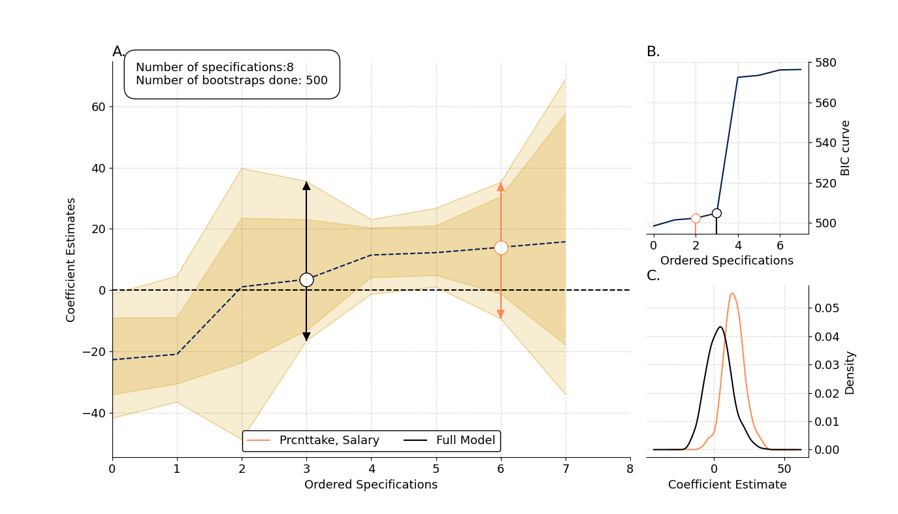
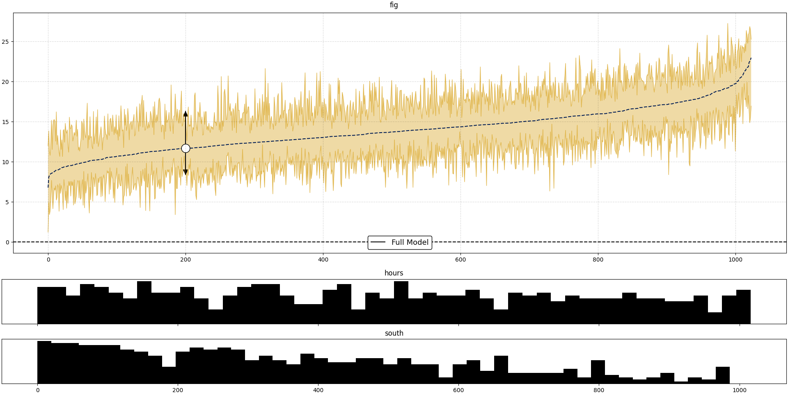
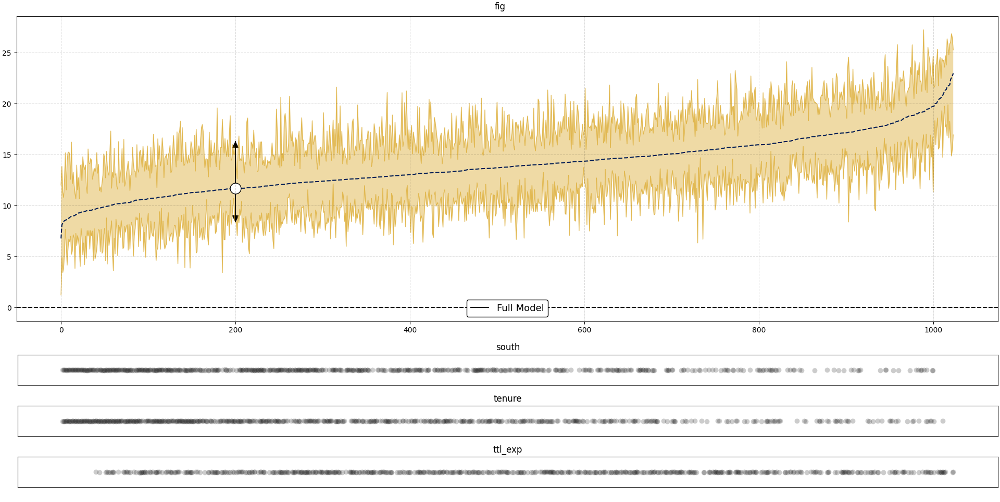

NRobust IC2S2
Charles Rahal1, 2
Daniel Valdenegro1, 2
1Leverhulme Centre for Demographic Science, University of Oxford
2Centre for Care, University of Oxford
NRobust:
A Python library for multiversal analysis.The issue
The issue
- There has recently been an increasing amount of attention paid to the levels of uncertainty around estimates produced in the academic social sciences, with the issue of researcher-induced uncertainty addressed in several high-profile papers.
The issue
- A key issue in researcher-induced uncertainty is the sensitivity of the estimates to different model specifications. These model specifications usually include all possible combinations of 'control' variables, along with other analytical choices.
The issue
- This has come to be known as 'multiverse analysis' when examining multiple types of 'researcher degrees of freedom'; or 'specification-curve analysis' when exclusively considering specification choices.
The issue
- Currently, researches conducting specification-curve analysis generally opt to use their own homebrew subroutines.
- The varying quality and stability of such routines usually affects replication efforts, undermining their robustness.
Our proposal
Our proposal
Giving a standar multiple linear regresion model:
$$ Y_i = \alpha_0 + \beta_1X_{i,1} + \sum_{k=2}^{K}\beta_kX_{i,k} +\sum_{j=1}^{J}\lambda_{j}c_{i,j} + \epsilon_i $$
For each observation $i = 1, \dots, N$ with $\{x_{i,1}, \dots x_{i,K}\} \in X$ being a fixed set of predictors, our approach allows us to:
Our proposal
$$ Y_i = \alpha_0 + \textcolor{red}{\beta_1X_{i,1}} + \sum_{k=2}^{K}\beta_kX_{i,k} +\sum_{j=1}^{J}\lambda_{j}c_{i,j} + \epsilon_i $$
- Isolate the variation in a 'feasible' output space pertaining to a specific coefficient of interest ($\beta_1$).
Our proposal
$$ Y_i = \alpha_0 + \beta_1X_{i,1} + \textcolor{red}{\sum_{k=2}^{K}\beta_kX_{i,k}} +\sum_{j=1}^{J}\lambda_{j}c_{i,j} + \epsilon_i $$
- Isolate the variation in a 'feasible' output space pertaining to a specific coefficient of interest ($\beta_1$).
- Include a set of variables $\{x_{i, 2} \dots x_{i,K}$) variables which should always be included in the model space.
Our proposal
$$ Y_i = \alpha_0 + \beta_1X_{i,1} + \sum_{k=2}^{K}\beta_kX_{i,k} + \textcolor{red}{\sum_{j=1}^{J}\lambda_{j}c_{i,j}} + \epsilon_i $$
- Isolate the variation in a 'feasible' output space pertaining to a specific coefficient of interest ($\beta_1$).
- Include a set of variables $\{x_{i, 2} \dots x_{i,K}$) variables which should always be included in the model space.
- Estimate the model with all possible combinations of subsets of control variables $\{c_1, \dots, c_J\}$ of any length up to $J$.
Our proposal
$$ \textcolor{red}{Y_i} = \alpha_0 + \beta_1X_{i,1} + \sum_{k=2}^{K}\beta_kX_{i,k} + \sum_{j=1}^{J}\lambda_{j}c_{i,j} + \epsilon_i $$
- Isolate the variation in a 'feasible' output space pertaining to a specific coefficient of interest ($\beta_1$).
- Include a set of variables $\{x_{i, 2} \dots x_{i,K}$) variables which should always be included in the model space.
- Estimate the model with all possible combinations of subsets of control variables $\{c_1, \dots, c_J\}$ of any length up to $J$.
- Compute the model with the arithmetic mean of all possible combinations of $\{y_1, \dots, y_{M}\}$ as the dependent variable.
Our proposal
$$ Y_i = \alpha_0 + \beta_1X_{i,1} + \sum_{k=2}^{K}\beta_kX_{i,k} + \sum_{j=1}^{J}\lambda_{j}c_{i,j} + \epsilon_i $$
- Isolate the variation in a 'feasible' output space pertaining to a specific coefficient of interest ($\beta_1$).
- Include a set of variables $\{x_{i, 2} \dots x_{i,K}$) variables which should always be included in the model space.
- Estimate the model with all possible combinations of subsets of control variables $\{c_1, \dots, c_J\}$ of any length up to $J$.
- Compute the model with the arithmetic mean of all possible combinations of $\{y_1, \dots, y_{M}\}$ as the dependent variable.
- Select a posteriori models or weight combinations of well-specified models for reliable inference.
Current Features
Current Features
- OLS and Fixed Effects calculations.
- Bayesian Model Average Score for each covariate.
- Optional out-of-sample predictive score for each specification.
- On demand highlight of selected specifications.
- 3 information criteria curves and its corresponding values for each spec: AIC, BIC, HQIC.
- Bootstrapped confidence intervals with density plots for highlighted specs.
- On demand hisghlight of selected covariates.
How does it look like?
How does it look like?
The user-facing code looks like this:
from nrobust.models import OLSRobust
import pandas as pd
import numpy as np
import matplotlib.pyplot as
df = pd.read_csv('Guber1999data.csv')
x = ["Spend"]
c = ["StuTeaRat", "Salary", "PrcntTake"]
y = ["SATT"]
example = OLSRobust(y=y, x=x, data=df)
example.fit(controls=c, draws=500, replace=True)
results = example.get_results()
fig, ax1, ax2, ax3 = results.plot(specs=[["PrcntTake", "Salary"]], ic='bic')
plt.show()
How does it look like?
How does it look like?

How does it look like?
How does it look like?
Future Challenges
Future Challenges
- Specification space size grows by $2^n$, where $n$ is the number of covariates. Models with 10 covariates produce 1,024 specifications. Models with 20 covariates produce 1,048,576. Models with 30 covariates produce 1,073,741,824 specificatios.
- Random sampling over the specification space?
- GPU parallelisation?